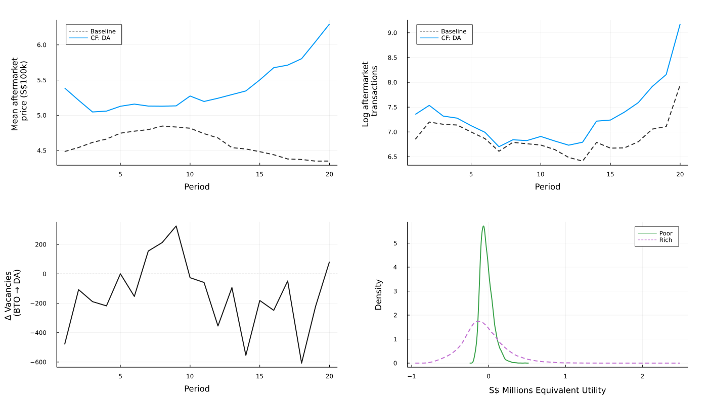
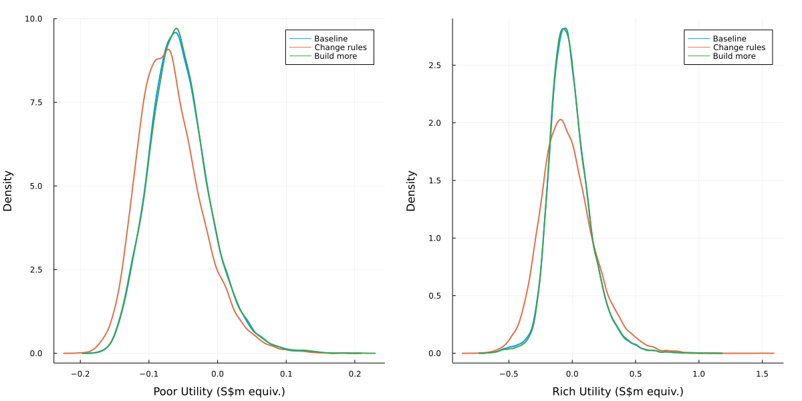

The dynamic allocation of public housing: Policy and spillovers
(Preliminary and incomplete. Do not cite.)
Kwok-Hao Lee
(with Andrew Ferdowsian and Luther Yap)
Created: 2022-06-02 Thu 14:02
1. Introduction
1.1. Motivation
We study the design of a large-scale public housing program
- Covering 80% of residents in a developed country (Singapore)
- Similar to those in major European and Asian cities
Because of limited land and funding, housing assistance is rationed.
- The government builds (public) housing
- sold below market prices
- possibly resold on a regulated aftermarket
- rationed by quarterly lottery over each applicant's top choice
- to achieve social objectives
1.2. Research questions
- What are the effects of changing allocation rules for public housing,
vis-à-vis building slightly more?
- "… we need to manage the building programme carefully, including allocating new flats in a fair, cost-effective and efficient way." (Mah 2011, 29)
- What are the impacts on wait times and prices on the aftermarket?
- "By 2014… first-time homeowners were counseled publicly to… wait for the new supply… Levies… deter[ed] property investments." (Chua 2017, 92–93)
1.3. Agenda
- Introduce the setting and provide descriptive analysis
- Build dynamic structural model of (new) public housing allocation
- Young households observe developments, then choose: apply to one, wait, or
buy off 2\(^{\circ} \) market
- Choice depends on characteristics, odds and 2\(^{\circ} \) market prices
- 2\(^{\circ} \) apartment owners observe prices, then decide whether to sell
- Markets clear by odds (1\(^{\circ} \)) and prices (2\(^{\circ} \))
- Young households observe developments, then choose: apply to one, wait, or
buy off 2\(^{\circ} \) market
- Estimate on novel data from the Singaporean mechanism
- Estimate dynamic demand (NFXP-GMM) and 2\(^{\circ} \) market supply (Euler CCP)
- Key challenge: endogenous lottery odds and 2\(^{\circ} \) market prices
- Evaluate how well the government can do…
- by changing allocation rules?
- by building a little more?
1.4. Preview of results

1. What are the effects of changing allocation rules for public housing…
- Changing rules generates spillovers in other markets
- Key trade-off: \[ \text{Apartment vacancies} \leftrightarrow \text{Young household welfare} \leftrightarrow \text{Owner-occupier home equity} \]
- A strategyproof mechanism reduces vacancies (12% \( \to \) 7%) but
advantages existing homeowners
- Rich households wait 23% less; poor 8% less
- Demand drives up prices on the secondary market (>15%)
- Only justified by strong preference for efficiency over redistribution
2. … vis-à-vis building slightly more (10%)?
- Choosing to wait longer can be rational (but selfish!)
- Developments are differentiated by location
- Expanding supply raises vacancies (12% \( \to \) 16%)
- Agents apply for desirable developments, but welfare largely unchanged
- Rich wait 3% less (1.3 weeks); no change for poor
- Existing homeowners virtually unharmed
Contributions
- First to evaluate market design and subsidy changes against a supply increase, reminiscent of Bulow and Klemperer (1996)
- Captures dynamic tradeoffs between waiting and applying in public housing choice
- Combines endogenous "success probabilities" and equilibrium prices on the secondary market
2. Setting
2.1. Historical context
80% of Singaporean households live in government housing
- 2021: 1.1m apartments, est. value S$440b
Build-to-order (BTO) mechanism, new government apartments (2001-today)
- S$6.3b/year (US$4.7b/year)
- Administered by the Housing and Development Board (HDB, 1960-today)
- "Sells" 99-year leases to households assigned new apartments
- Intermediates resale on (after)market
Government objective: Provide "affordable, quality public housing option"
- Encourage homeownership
- "Affordable": \( \leq \) 4x applicant yearly income
- Minimize vacancies
- Ensure economic and racial integration, family formation…
Eligibility for the mechanism
Applicants apply for BTO as a family unit (typically a married couple)
- One must be a Singapore citizen; the other a citizen/PR
- Both aged \( \geq \) 21 years
- Do not own real estate in Singapore or overseas
- Income \( \leq \) S$144,000 a year
Priority: Focus on "first-timers."
- 95% of apartments in desirable neighborhoods reserved for them
Subsidies and apartment types
- Unit of analysis: Housing development, (location, apartment size) pair
- Apartment types
- 3(4)-room: 2(3) bedrooms, 1 living room
- 5-room: 3 bedrooms, 1 living room, 1 dining room
- Subsidies
- Explicit: "Discount" on apartment conditional on income
- Implicit: "Sticker price" < Price of comparable resale units
Historical context (comparison)
| Characteristic/Settings | Singapore (+ Israel, Brazil, …) | United States (e.g. NYCHA) |
|---|---|---|
| Lease type | Owner-occupation | Rental |
| Lease tenure | \( \geq \) 99 years | 1-2 years |
| Lease transferable? | Yes, after min term (SGP, ISR: 5 yrs) | No |
| Applicant wealth | Low to moderate | Low |
| Transfer type | Income-specific subsidy + | Direct rent control/ |
| Discount from "resale price" | Voucher (for rent > 40% AGI) | |
| Allocation mechanism | Centralized assignment, lottery | Waitlist |
| Application cycles | Periodic (SGP: Quarterly) | Continuous (FIFO) |
| # Choices per app | 1 | > 1 |
2.2. The Singaporean housing market

Within a period…

- Cannot participate if I already have a house

Housing affordable for the poor?

3. Model: Outline
Needed to predict equilibrium effects of rule changes and added supply on lottery odds and aftermarket prices.
3.1. Dynamic equilibrium model of housing choice
Young households
- Poor and rich, finitely-lived, perfect foresight
- In each period, given prefs, prices and odds of success over developments,
either
- Apply for one development within the mechanism;
- Wait (live with family); or
- Buy a house on the secondary market (terminal)
- Key trade-off: Success odds vs. desirability
Existing owner-occupiers
- Infinite horizon, perfect foresight through 2022
- In each period, given the prices they face, either
- Sell off their apartment (terminal); or
- Continue living in it
- Key trade-off: Sell today vs. sell at higher price tomorrow
Markets clear via lottery odds (1\(^{\circ} \)) and prices (2\(^{\circ} \))
Endogenous objects
- In each period, the income and age composition of the searchers
- At each development, the probability that a searcher succeeds
- On the aftermarket, the mean sale price
- For each new apartment, its 5-year-ahead resale price
Frictions
- "Sticker prices" below static market clearing level
- Rational delay, leading to vacancies
4. Estimation: Outline
4.1. Data and where we are headed
Want to recover…
- young household preferences and wait costs (demand) and
- how likely existing homeowners are to move when their home prices change (supply).
… with novel Singaporean data covering the universe of public housing transactions
- Mechanism (scraped): 195 developments over 20 periods (2012-2015)
- Application rates, prices and quantities and nearby amenities
- Secondary market (data.gov.sg): 570,000 transactions over 20 years (2000-2020)
- Month/year transacted, location, price, year built
Estimation and identification: Brief
Demand: Young household preferences recovered via GMM ("Dynamic BLP", e.g. Gowrisankaran and Rysman 2012)
- Identification: Every period, applicants face different "menus" of
developments
- Poor also face different prices from rich (explicit subsidies)
- Instruments: Granite costs + Stamp duty shock (2013) + Differentiation IV (Gandhi and Houde 2021)
Secondary Market Supply: IV-FE regression over each (neighborhood, apartment size) pair (Euler CCP; Kalouptsidi, Scott and Souza-Rodrigues 2021)
- Identification: \( \Delta \) market shares and prices by apartment type over time
- Instruments: Changes to BTO subsidies (2015, 2019) + Unanticipated LTV restriction (2018)
5. Counterfactuals
5.1. Changing allocation rules
What happens if we switch to an (infeasible) variant of deferred acceptance?
- Given guess of secondary market prices, all agents truthfully list their preferences over (eligible) developments and exiting
- Designer runs random serial dictatorship over developments and "exiting."
In simulations, find 2\(^{\circ}\) prices to clear the market.
RSD counterfactual results
We find
- Vacancies fall (12% \( \to \) 7%)
- Applicants benefit from specifying two developments in the same period
- Wait times fall 20% for rich and 8% for the poor
- Prices on the secondary market rise by 15%
- Some applicants now prefer exiting early to failing at a development "late in their search."
Takeaway: Planner should opt for RSD if she places a high weight on efficiency over redistribution (to the young).
RSD counterfactual plots

5.2. Comparing changing rules to building more
| Outcome/Counterfactual | Baseline | Changing rules | Building 10% more |
|---|---|---|---|
| Vacancies | 12% | 7% | 16% |
| Wait times | Poor: 1.5 years | \( \downarrow \)10% | Unchanged |
| Rich: 10 months | \( \downarrow \)20% | \( \downarrow \)3% | |
| Secondary market prices | S$460k | \( \uparrow \)15% | Unchanged |
Building a little more
What happens if we build 10% more in oversubscribed developments (\( \geq \) 1 applicant for 1 apartment)
- Expands flow of apartments by 6.8%
- Prices on the 2\(^{\circ} \) market largely unaffected
- Flow is small relative to stock
- Vacancies rise (12% \( \to \) 16%), esp. in smallest apartments
- Wait times fall by 3% for rich, but not for poor
- Welfare largely unchanged
Two forces at play.
- On one hand, more agents matched to desirable apartments
- On the other, agents substitute to competitive developments
- … and some fail trying
Match utility comparisons

6. Conclusion
Main takeaways
- Changing the rules of the game is not free
- Crucial to consider spillovers across markets
- Homeowners: Think carefully about portfolio choice
- Home equity affected by prima facie unrelated rule changes
- Government/Planner: Increasing supply is "reliable"
- At the margin, congestion alleviated by building more
Future research: Optimal public housing location; Informational interventions
Thank you! (khl [at] princeton [dot] edu)
6.1. Literature review
- Estimating demand for neighborhoods/housing: Bayer, Ferreira and McMillan
(2007); Galiani, Murphy and Pantano (2015); Bayer et al (2016); Fu and Gregory
(2019); Waldinger (2020); Epple, Quintero and Sieg (2020); Davis, Gregory and
Hartley (2021)
- Moving and labor market impacts: e.g. Chyn (2018); Chyn, Hyman and Kapustin (2019); van Dijk (2020)
- Low-income housing/rent control: Diamond and McQuade (2019); Diamond, McQuade and Qian (2019)
- Housing search: Landvoigt, Piazzesi and Schneider (2015); Piazzesi and Schneider (2016); Piazzesi, Schneider and Stroebel (2020)
- Dynamic assignment mechanisms: Budish and Cantillon (2012); Agarwal and Somaini (2018); Agarwal et al (2020); Verdier and Reeling (2021)
- Large market models of one-sided matching: Bogomolnaia and Moulin (2001); Azevedo and Leshno (2016); Abdulkadiroglu et al. (2015); Leshno and Lo (2018)